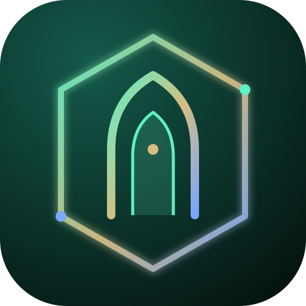

SHOLAT NABI ﷺBerandaSetiap bacaan dilengkapi ragam riwayat, arti, dan sumber hadis. Ketuk bacaan untuk membuka.
Audio memakai suara Arab sintetis dari perangkat, bukan rekaman qari. Untuk menghafal dan memperbaiki tajwid, belajarlah langsung kepada guru.
“Sholatlah sebagaimana kalian melihat aku sholat.”
Buka sumber ↗ HadisShahih Muslim 490Perintah bersujud di atas tujuh anggota tubuh.
Buka sumber ↗ Al-Qur'anQS. Al-Ma'idah 5:6Dasar wudhu dan tayammum.
Buka sumber ↗ Al-Qur'anQS. An-Nisa' 4:103Sholat memiliki waktu yang ditentukan.
Buka sumber ↗Materi ini kerangka belajar, bukan fatwa. Nomor dan derajat hadis dapat berbeda antar-edisi, verifikasi sebelum dijadikan rujukan final. Perbedaan pendapat ulama yang berdalil dicantumkan sebagai khilafiyah; ikuti bimbingan guru tepercaya. Jadwal dihitung dengan rumus astronomi (Subuh 20°, Isya 18°); cocokkan dengan jadwal Kemenag atau masjid setempat.